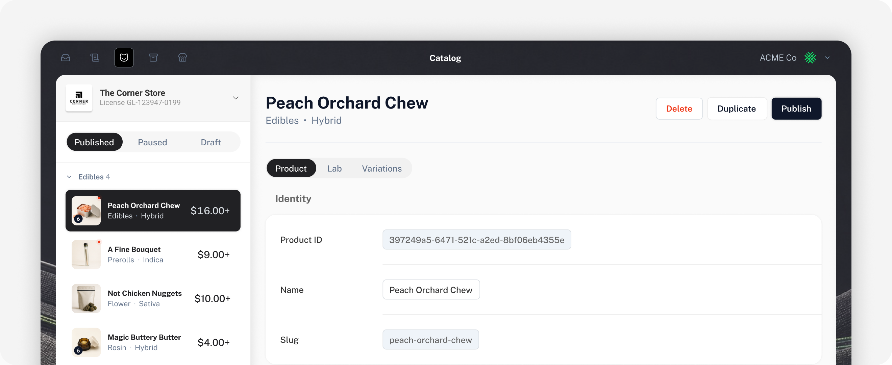
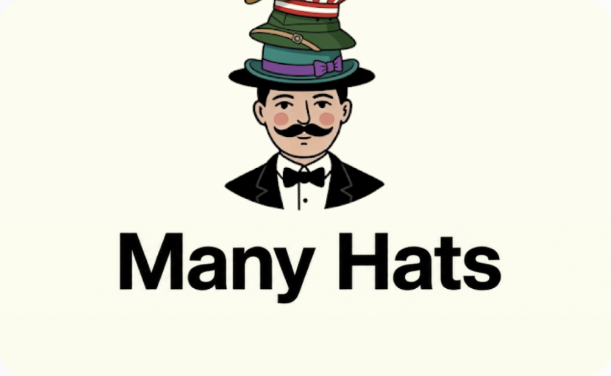
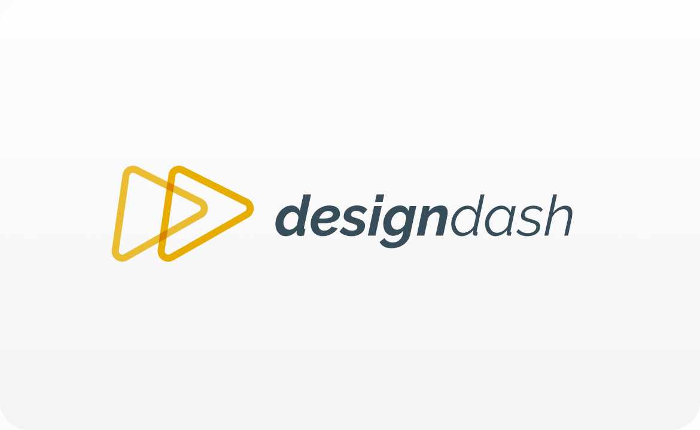

01
I make complexity explainable.
Enterprise platforms, complex workflows, information architecture, and interconnected systems are where I'm most experienced.
I turn complex products, systems, and workflows into experiences people can actually understand.

01
Enterprise platforms, complex workflows, information architecture, and interconnected systems are where I'm most experienced.
02
I use research, prototyping, code, experimentation, and AI to understand ideas quickly and get closer to the thing we're actually building.
03
Design systems, OOUX, reusable patterns, shared models, and better workflows let good design extend beyond a single feature.
Selected work

Imagine you’re a teacher tracking assignments you gave across multiple apps to your 3rd graders....
Object models, design systems, prototypes, and tools I've built to help teams define and ship products.
Object models, design systems, prototypes, and tools I've built to help teams define and ship products.
Independent work

Object models, design systems, prototypes, and tools I've built to help teams define and ship products.
Object models, design systems, prototypes, and tools I've built to help teams define and ship products.
Object models, design systems, prototypes, and tools I've built to help teams define and ship products.
experiments
Object models, design systems, prototypes, and tools I've built to help teams define and ship products.


Other Stuff
Help teachers manage classroom assignments